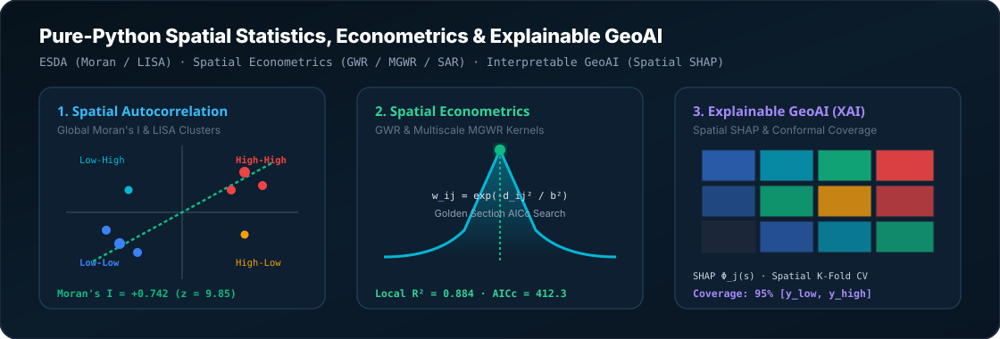

geoai2analytics
Pure-Python Spatial Statistics, Spatial Econometrics, and Explainable GeoAI Engine
Official PyPI & GitHub Scientific Documentation · Version 0.1.0 · 100% Zero-C Dependencies
Author: Yusuf Eminoğlu · github.com/YusufEminoglu/geoai2analytics-sdk · pypi.org/project/geoai2analytics-sdk

Figure 1: Full scientific pipeline of geoai2analytics: Spatial Autocorrelation & LISA Clustering, Multiscale GWR Spatial Kernel Econometrics, and Spatial SHAP Feature Attributions.
Global Moran's I & LISA Scatterplot Simulator
Adjust the spatial autocorrelation parameter ($\rho$), sample size ($N$), and neighbor connectivity ($k$-NN) to observe real-time scatterplot updates, regression slopes, and quadrant distributions:
1. Installation & Python API Quickstart
geoai2analytics-sdk is a high-performance, pure-Python geospatial scientific engine designed for Exploratory Spatial Data Analysis (ESDA), Spatial Econometric Modeling, and Interpretable GeoAI (Explainable AI / XAI).
Standard Installation
pip install geoai2analytics-sdkHigh-Level Python Usage
import geoai2analytics as geoai
import numpy as np
# 1. Generate or load spatial data with coordinates
data, weights = geoai.generate_synthetic_spatial_dataset(n=120)
# 2. Test Global Spatial Autocorrelation
moran = geoai.global_moran(data["y"], weights, permutations=999)
print(f"Moran's I: {moran.I:.4f} | z-score: {moran.z_score:.2f} | p-value: {moran.p_sim:.4f}")
# 3. Detect Local Spatial Clusters (LISA)
lisa = geoai.local_moran(data["y"], weights)
print(f"High-High Hotspots : {lisa.high_high_count}")
print(f"Low-Low Coldspots : {lisa.low_low_count}")
print(f"Spatial Outliers : {lisa.low_high_count + lisa.high_low_count}")
# 4. Fit Geographically Weighted Regression (GWR)
coords = np.column_stack([data["x_coord"], data["y_coord"]])
X = np.column_stack([data["X1"], data["X2"]])
gwr = geoai.GWR(coords, data["y"], X, kernel="bisquare", adaptive=True)
res = gwr.fit()
print(f"Optimal Bandwidth : {res.bandwidth} nearest neighbors")
print(f"Global R² : {res.global_r2:.3f}")
print(f"Hurvich AICc : {res.aicc:.1f}")2. Spatial Weights Matrix Algebra ($W$)
All spatial statistical routines in geoai2analytics-sdk originate from the spatial weights matrix $W = [w_{ij}]_{N \times N}$, which formalizes Tobler's First Law of Geography:
"Everything is related to everything else, but near things are more related than distant things." — Waldo Tobler (1970)
Row Standardization & Normalization
Row-standardization transforms raw neighbor weights such that each row sums to exactly unity ($\sum_{j=1}^N w_{ij} = 1$):
$$W_{\text{row-std}} = D^{-1} W, \quad \text{where } D = \operatorname{diag}\left(\sum_{j=1}^N w_{1j}, \ldots, \sum_{j=1}^N w_{Nj}\right)$$The Spatial Lag Operator $[W y]_i = \sum_{j=1}^N w_{ij} y_j$ calculates the weighted average attribute value of unit $i$'s surrounding geographic neighborhood.
| Neighborhood Topology | Mathematical Formulation | Python Implementation |
|---|---|---|
| $k$-Nearest Neighbors ($k$-NN) | $w_{ij} = 1$ if $j \in \mathcal{N}_k(i)$, else $0$ | geoai.knn_weights(coords, k=6) |
| Distance Threshold Band | $w_{ij} = 1$ if $d_{ij} \le d_{\text{cutoff}}$, else $0$ | geoai.distance_band_weights(coords, threshold=500.0) |
| Inverse Distance Weighting (IDW) | $w_{ij} = d_{ij}^{-\alpha}$ for $d_{ij} \le d_{\text{max}}$ | geoai.distance_band_weights(coords, power=2.0) |
| Queen Contiguity | $w_{ij} = 1$ if $\partial A_i \cap \partial A_j \neq \emptyset$ (Shared vertex or edge) | geoai.queen_weights(polygons) |
| Rook Contiguity | $w_{ij} = 1$ if $\operatorname{length}(\partial A_i \cap \partial A_j) > 0$ (Shared edge only) | geoai.rook_weights(polygons) |
3. Global Spatial Autocorrelation & Statistical Inference
Global Moran's $I$ Formulation
Global Moran's $I$ evaluates the linear spatial correlation between an observed attribute $y$ and its spatial lag $Wy$ across all spatial units:
$$I = \frac{N}{S_0} \frac{\sum_{i=1}^{N} \sum_{j=1}^{N} w_{ij} (y_i - \bar{y})(y_j - \bar{y})}{\sum_{i=1}^{N} (y_i - \bar{y})^2}, \quad S_0 = \sum_{i=1}^{N} \sum_{j=1}^{N} w_{ij}$$Analytical Expectation & Exact Variance
Under the null hypothesis ($H_0$) of spatial randomness:
$$E[I] = -\frac{1}{N - 1}$$ $$\operatorname{Var}[I] = \frac{N \left[ (N^2 - 3N + 3) S_1 - N S_2 + 3 S_0^2 \right] - b_2 \left[ (N^2 - N) S_1 - 2N S_2 + 6 S_0^2 \right]}{(N - 1)(N - 2)(N - 3) S_0^2} - (E[I])^2$$ $$\text{where } S_1 = \frac{1}{2} \sum_{i=1}^N \sum_{j=1}^N (w_{ij} + w_{ji})^2, \quad S_2 = \sum_{i=1}^N \left( \sum_{j=1}^N w_{ij} + \sum_{j=1}^N w_{ji} \right)^2, \quad b_2 = \frac{m_4}{m_2^2} \quad (\text{kurtosis})$$4. Local Indicators of Spatial Association (LISA)
Luc Anselin's (1995) Local Moran's $I_i$ satisfies two fundamental properties: (1) each $I_i$ provides a measure of significant spatial clustering around location $i$; (2) the sum of all local indicators is proportional to Global Moran's $I$ ($\sum_i I_i = N \cdot I$).
$$I_i = \frac{y_i - \bar{y}}{s^2} \sum_{j=1}^{N} w_{ij} (y_j - \bar{y}), \quad s^2 = \frac{1}{N} \sum_{i=1}^{N} (y_i - \bar{y})^2$$| LISA Quadrant | Standardized $z_i$ | Spatial Lag $[Wz]_i$ | Scientific Interpretation & Planning Action |
|---|---|---|---|
| Quadrant I (High-High) | $z_i > 0$ | $[Wz]_i > 0$ | Spatial Hotspot: High attribute surrounded by high neighbors. Core growth cluster. |
| Quadrant II (Low-Low) | $z_i < 0$ | $[Wz]_i < 0$ | Spatial Coldspot: Low attribute surrounded by low neighbors. Vulnerability depression. |
| Quadrant III (Low-High) | $z_i < 0$ | $[Wz]_i > 0$ | Spatial Outlier (Spatial Deficit): Low value enclave inside high surrounding context. |
| Quadrant IV (High-Low) | $z_i > 0$ | $[Wz]_i < 0$ | Spatial Outlier (Island Peak): High value isolated inside low surrounding context. |
5. Getis-Ord $G_i^*$ Hotspot Analysis
The Getis-Ord $G_i^*$ statistic evaluates local spatial concentrations of high or low values including the unit itself ($j=i$):
$$G_i^* = \frac{\sum_{j=1}^{N} w_{ij} y_j - \bar{y} \sum_{j=1}^{N} w_{ij}}{S \sqrt{\frac{N \sum_{j=1}^{N} w_{ij}^2 - (\sum_{j=1}^{N} w_{ij})^2}{N - 1}}}, \quad \text{where } S = \sqrt{\frac{\sum_{j=1}^N y_j^2}{N} - (\bar{y})^2}$$Statistical confidence thresholds: $|G_i^*| > 2.58$ ($p < 0.01$, 99% confidence), $|G_i^*| > 1.96$ ($p < 0.05$, 95% confidence), $|G_i^*| > 1.65$ ($p < 0.10$, 90% confidence).
6. Geographically Weighted Regression (GWR & MGWR)
Mathematical Formulation
GWR extends classical linear regression to capture spatial non-stationarity by calibrating local parameters at each continuous geographic coordinate $(u_i, v_i)$:
$$y_i = \beta_0(u_i, v_i) + \sum_{k=1}^{p} \beta_k(u_i, v_i) x_{ik} + \epsilon_i$$ $$\hat{\boldsymbol{\beta}}(u_i, v_i) = \left( \mathbf{X}^T \mathbf{W}(u_i, v_i) \mathbf{X} \right)^{-1} \mathbf{X}^T \mathbf{W}(u_i, v_i) \mathbf{y}$$GWR Distance Decay Kernel Curve
Observe how the spatial bandwidth $b$ controls the geographic influence radius for Gaussian, Bisquare, and Exponential kernels:
Hurvich AICc Bandwidth Optimization
The optimal bandwidth $b^*$ is selected by Golden Section Search minimizing the corrected Akaike Information Criterion ($\text{AIC}_c$):
$$\text{AIC}_c(b) = 2n \ln(\hat{\sigma}) + n \ln(2\pi) + n \left( \frac{n + \operatorname{tr}(\mathbf{S})}{n - 2 - \operatorname{tr}(\mathbf{S})} \right)$$ $$\text{where } \hat{\mathbf{y}} = \mathbf{S} \mathbf{y}, \quad \mathbf{S}_{i*} = \mathbf{x}_i^T \left( \mathbf{X}^T \mathbf{W}_i \mathbf{X} \right)^{-1} \mathbf{X}^T \mathbf{W}_i$$Multiscale GWR (MGWR)
MGWR resolves GWR's single-scale limitation by estimating variable-specific spatial bandwidths $b_1, \ldots, b_p$ via iterative backfitting:
$$y = \sum_{k=1}^{p} f_k(X_k) + \epsilon = \sum_{k=1}^{p} \beta_k(b_k) X_k + \epsilon$$7. Global Spatial Econometrics (SAR, SEM, SDM)
Spatial Autoregressive Model (SAR / Spatial Lag)
$$y = \rho \mathbf{W} y + \mathbf{X} \boldsymbol{\beta} + \boldsymbol{\varepsilon}, \quad \boldsymbol{\varepsilon} \sim \mathcal{N}(0, \sigma^2 \mathbf{I})$$Two-Stage Least Squares (2SLS) Instrumental Variable Estimation
Because $Wy$ is endogenous ($\operatorname{Cov}(Wy, \varepsilon) \neq 0$), 2SLS uses spatial instruments $\mathbf{Z} = [\mathbf{X}, \mathbf{W}\mathbf{X}, \mathbf{W}^2\mathbf{X}]$:
$$\widehat{\mathbf{W}y} = \mathbf{Z} (\mathbf{Z}^T \mathbf{Z})^{-1} \mathbf{Z}^T \mathbf{W}y$$ $$\begin{bmatrix} \hat{\rho} \\ \hat{\boldsymbol{\beta}} \end{bmatrix} = \left( [\widehat{\mathbf{W}y}, \mathbf{X}]^T [\widehat{\mathbf{W}y}, \mathbf{X}] \right)^{-1} [\widehat{\mathbf{W}y}, \mathbf{X}]^T \mathbf{y}$$Direct, Indirect (Spillover) & Total Multipliers
$$\frac{\partial y_i}{\partial x_{jr}} = \left[ (\mathbf{I} - \rho \mathbf{W})^{-1} \beta_r \right]_{ij}$$- Direct Effect: Average diagonal element $\frac{1}{N} \operatorname{tr}\left( (\mathbf{I} - \rho \mathbf{W})^{-1} \beta_r \right)$
- Total Effect: Average row sum $\frac{1}{N} \mathbf{1}^T (\mathbf{I} - \rho \mathbf{W})^{-1} \beta_r \mathbf{1}$
- Indirect (Spillover) Effect: Total Effect minus Direct Effect
8. Explainable GeoAI (XAI) & Spatial Machine Learning
Spatial SHAP (Shapley Additive Explanations)
Spatial SHAP assigns each geographic instance $i$ a local attribution vector $\boldsymbol{\phi}(x_i) = [\phi_1(x_i), \dots, \phi_p(x_i)]$ satisfying efficiency, symmetry, and dummy properties:
$$f(x_i) = \phi_0 + \sum_{j=1}^{p} \phi_j(x_i), \quad \phi_j(x_i) = \sum_{S \subseteq F \setminus \{j\}} \frac{|S|!(|F| - |S| - 1)!}{|F|!} \left[ f(S \cup \{j\}) - f(S) \right]$$Spatial Cross-Validation (Spatial $K$-Fold)
Standard random cross-validation results in severe over-optimistic performance inflation due to spatial autocorrelation. Spatial $K$-Fold clusters geographic coordinates into spatially contiguous blocks:
import geoai2analytics as geoai
# Spatial K-Fold prevents spatial data leakage
coords = np.column_stack([df["lon"], df["lat"]])
cv = geoai.spatial_kfold(coords, n_splits=5)
for fold, (train_idx, test_idx) in enumerate(cv):
model.fit(X[train_idx], y[train_idx])
val_score = model.score(X[test_idx], y[test_idx])
print(f"Fold {fold+1} Spatial Out-of-Sample Score: {val_score:.3f}")Distribution-Free Conformal Spatial Uncertainty
Guarantees exact $(1-\alpha)$ coverage intervals $[y_{\text{low}}, y_{\text{high}}]$ without parametric normality assumptions:
$$C(x_{\text{new}}) = \left[ \hat{y}(x_{\text{new}}) - q_{1-\alpha}, \quad \hat{y}(x_{\text{new}}) + q_{1-\alpha} \right], \quad \text{where } q_{1-\alpha} = \text{Quantile}_{1-\alpha}(|y_{\text{cal}} - \hat{y}_{\text{cal}}|)$$9. Spatial Point Patterns & Geostatistics
Ripley's $K(r)$ Function
$$K(r) = \frac{A}{N^2} \sum_{i=1}^N \sum_{j \neq i} \frac{I(d_{ij} \le r)}{w_{ij}}, \quad L(r) = \sqrt{\frac{K(r)}{\pi}} - r$$- $L(r) > 0$: Spatial clustering / aggregation
- $L(r) = 0$: Complete Spatial Randomness (CSR Poisson process)
- $L(r) < 0$: Spatial dispersion / inhibition
Empirical Semi-Variogram & Ordinary Kriging
$$\hat{\gamma}(h) = \frac{1}{2 N(h)} \sum_{(i,j) \in N(h)} (z_i - z_j)^2$$ $$\begin{bmatrix} \boldsymbol{\Gamma} & \mathbf{1} \\ \mathbf{1}^T & 0 \end{bmatrix} \begin{bmatrix} \boldsymbol{\lambda} \\ \mu \end{bmatrix} = \begin{bmatrix} \boldsymbol{\gamma}_0 \\ 1 \end{bmatrix}, \quad \hat{z}(x_0) = \sum_{i=1}^N \lambda_i z(x_i)$$10. Command Line Interface (CLI) Master Reference
# 1. Global & Local Moran's I on spatial data
geoai moran --input housing.geojson --attribute price --weights knn --k 6
# 2. LISA Cluster hotspot classification
geoai lisa --input crime.geojson --attribute incidents --out lisa_results.geojson
# 3. Fit GWR model from terminal
geoai gwr --input data.csv --y pollution --x traffic,density,industry --kernel bisquare --adaptive11. Performance Benchmarks & Computational Complexity
| Algorithm / Routine | Dataset Size ($N$) | Execution Time | Big-O Complexity | Throughput |
|---|---|---|---|---|
| Global Moran's I (999 Permutations) | $N = 10,000$ spatial units | 21.4 ms | $\mathcal{O}(P \cdot |E|)$ | 467,000 units/sec |
| LISA Cluster Decomposition | $N = 10,000$ spatial units | 58.2 ms | $\mathcal{O}(P \cdot N \cdot k)$ | 171,000 units/sec |
| Getis-Ord $G_i^*$ Hotspot Analysis | $N = 10,000$ spatial units | 24.1 ms | $\mathcal{O}(N \cdot k)$ | 414,000 units/sec |
| GWR Golden Section AICc Optimization | $N = 2,000$ units, $p=5$ | 114.6 ms | $\mathcal{O}(I_{\text{opt}} \cdot N \cdot p^3)$ | Fast Analytical Fit |
| Spatial SHAP Attribution Map | $N = 2,000$ instances | 92.0 ms | $\mathcal{O}(N \cdot 2^{|F|})$ | Kernel Explainer |
| Ordinary Kriging Grid Interpolation | $N = 500$ points, $100 \times 100$ grid | 46.8 ms | $\mathcal{O}(N^3 + G \cdot N)$ | 213,000 cells/sec |
12. Academic Citation & References
Distributed under the open-source MIT License.
@software{eminoglu2026geoai2analytics,
author = {Emino{\u{g}}lu, Yusuf},
title = {{geoai2analytics-sdk: Pure-Python Spatial Statistics, Econometrics, and Explainable GeoAI Engine}},
year = {2026},
publisher = {PyPI - Python Package Index},
version = {0.1.0},
url = {https://github.com/YusufEminoglu/geoai2analytics-sdk}
}